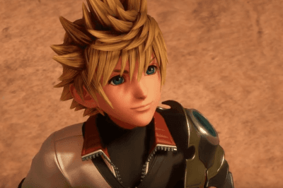
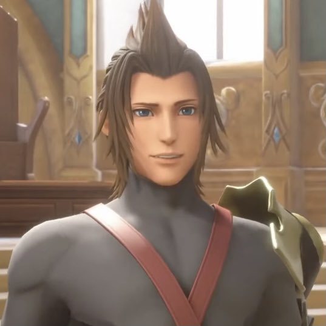

VENTUSVentus es uno de los discipulos del maestro Eraqus, mucho antes del nacimiento de Sora, ventus es un ser de pura luz que fue utilizado por el maestro Xeahnort, ya que este no le servia debido a que era muy bondadoso, saco la oscuridad de su corazon para utilizarla y dejandolo mal herido refugiando su alma en el corazon de Sora. Mas adelante ayudara a nuestros amigos en la gran batalla final |
 |
TERRATerra es otro discipulo del maestro Eraqus y el que deberia heredar su legado, sin embargo Eraqus se dio cuenta que en el corazon de Terra habia mas oscuridad de la debida y no lo nombro como el siguiente maestro. Terra como consecuencia confia en Xeahnort quien lo utiliza para sus beneficios y utiliza su cuerpo para crear incorporeos. Mas adelante consiguen salvarlo y luchara con nuestros amigos en la gran batalla. |
 |
AQUAAqua es la tercera discipula de Eraqus, se convirtio en la siguiente maestra despues de que Terra abandonara y se hizo cargo de cuidar a Ventus Se fue en busca de Terra para poder salvarlo y en su consecuencia acabo sumergida en la oscuridad poseyendola. Sora La consigue rescatar y juntos ayudan a Terra y a despertar a Ventus y ayudo en la gran batalla final. |